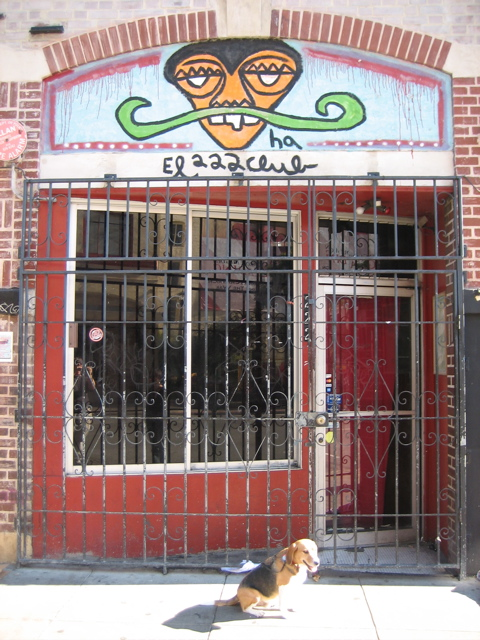

<--Previous Up Next-->

222 Club
At 222 Hyde, between Turk and Eddy. This place is slated to close. Huxley is looking away, and we gave up on retaking this photo with him looking toward the camera, because there's always a big crowd of scruffy Tenderloin residents here. It was a minor miracle that we got a break in the crowd long enough to take this.